阔别一年，经典原版音乐剧《Ghost人鬼情未了》王者归来
42 阅读 | 发布日期：2017-05-09 09:35:1926年前，一部好莱坞大片《人鬼情未了》感动了许多影迷，该影片的主题曲《奔放的旋律》（Unchained Melody）更是深受歌迷的喜爱。
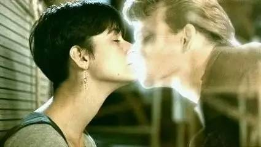去年，根据这部电影改编的音乐剧《GHOST 人鬼情未了》首次来到中国巡演，该音乐剧以电影的爱情故事为内容，以音乐剧的形式再现了电影中的经典场景与音乐，受到国内观众的如潮好评。
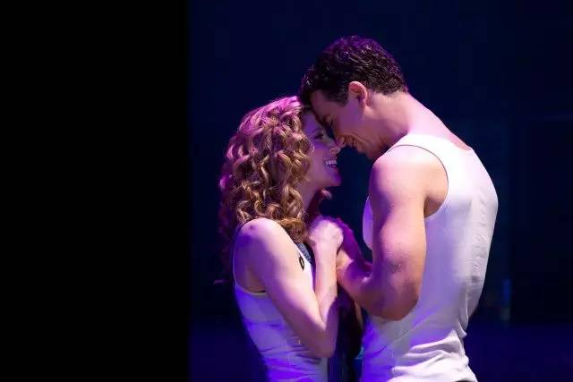今年，这部来自英国的经典原版音乐剧《GHOST 人鬼情未了》将于11月起再次在中国巡回演出，剧中感人的故事和音乐也将再次感动中国观众。此次第二轮的中国巡演将历时四个月（2016.11- 2017.2），造访十二个城市（宁波、沈阳、郑州、东莞、昆山、无锡、合肥、武汉、南京、上海、北京、广州），其中上海站将于 2017.1.30 - 2.3 在上汽·上海文化广场上演。
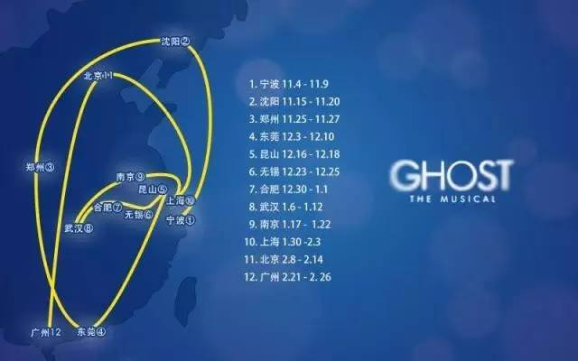电影原著提供好故事
1990年，由好莱坞巨星黛米·摩尔、帕特里克·斯威兹和乌比·戈德堡等主演的《人鬼情未了》被誉为好莱坞影史最伟大的100部爱情电影之一。影片讲述了一名男子在被杀后化为鬼魂，透过一名黑人灵媒与女友再续前缘，并将谋杀他的幕后凶手绳之以法的故事。
这段生离死别、荡气回肠的爱情故事在90年代初曾风靡全球，赚尽影迷眼泪，令无数人为之所动容。电影中男女主角制作陶器的场景，伴随着正义兄弟的经典歌曲 《奔放的旋律》（Unchained Melody），是电影史上最令人难忘的片段之一。
2011年，电影原作者布鲁斯·乔伊·罗宾为音乐剧改编了《人鬼情未了》，这一改编在尊重原著基本情节的基础上，更适合舞台表现，同时，从音乐剧的角度，该剧保留了那段电影的主题歌《奔放的旋律》（Unchained Melody），并将大量描写人物内心世界的歌曲融入剧中，为这部戏增加了很多煽情的表达。
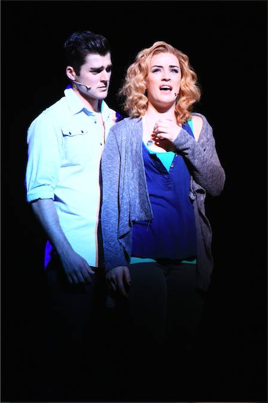在舞台制作上，导演将魔幻效果应用到音乐剧中，使其与电影蒙太奇手法接近，打造了一个神奇的音乐剧版《人鬼情未了》。经典原版音乐剧《Ghost人鬼情未了》自2011年首演起已经演满了2500场，并在英国、美国、韩国、捷克、匈牙利、意大利、德国、瑞典、巴西、菲律宾与中国等国家演出。
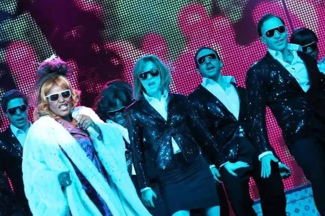该音乐剧去年6月份在国内进行了中国的首轮巡演，精美的制作和动人的音乐感动了无数国内的观众，观众们无不为该剧对艺术精益求精的演出而感动。特别是剧中特技效果的运用和音乐的运用，显示了英国伦敦西区和美国纽约百老汇当代音乐剧的高水准。
强大主创阵容保障音乐剧品质
经典原版音乐剧《Ghost人鬼情未了》创作至今尽管才演5年，除了在世界多个国家进行演出之外，还长期在伦敦西区和纽约百老汇驻演，这也说明了该音乐剧有着极高的品质和极好的观众缘，而强大的主创阵容是保障该剧长期占有市场的资本。
-- 金牌编剧
凭借电影《人鬼情未了》获得奥斯卡最佳编剧奖的好莱坞金牌编剧布鲁斯•乔伊•罗宾亲自为音乐剧版本改编剧本、创作歌词并参与了整个制作过程。自从电影大获成功后，许多人就一直建议布鲁斯将电影改编为音乐剧，但他对这个想法一直有所保留，直到2011年遇到了该音乐剧的导演，曾多次荣获托尼奖的马修•华修斯和他的团队。因为布鲁斯认为，这是一支让他信任和欣赏的制作团队。
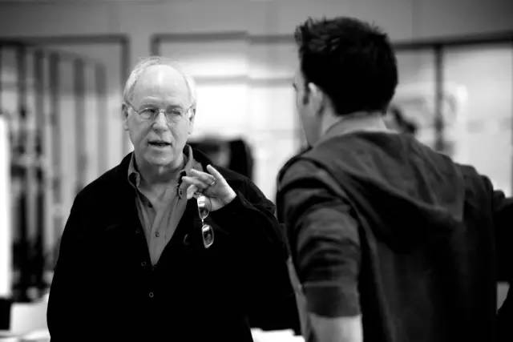-- “圣手”作曲
经典原版音乐剧《Ghost人鬼情未了》的作曲则是戴夫•斯图尔特，在欧美地区可是个家喻户晓的人物。在上世纪80年代，有一支叫做The Eurythmic的乐队盛极一时、红遍整个欧美乐坛，也将这位戴夫•斯图尔特当之无愧地送上了格莱美音乐宝座。2012伦敦奥运会开幕式上便播放了他的成名曲《sweet dreams》；闭幕式上这位“音乐圣手”还为全球数亿观众，现场演唱了知名歌曲《little bird》。而他的一曲《sweet dreams》至今仍被多位欧美大咖多次翻唱。
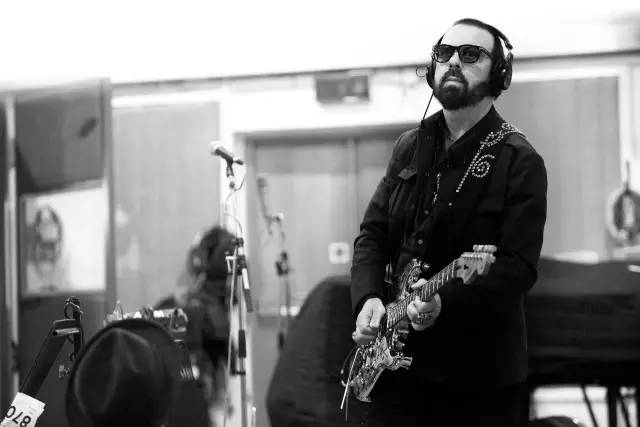2010年，戴夫为英国老牌摇滚女歌手Stevie Nicks制作了专辑《In Your Dreams》，与格伦•巴拉德（Glen Ballard），也就是水果姐尊敬的格伦叔，有了首次合作。两人后来在经典原版音乐剧《Ghost人鬼情未了》中，又有了进一步合作。
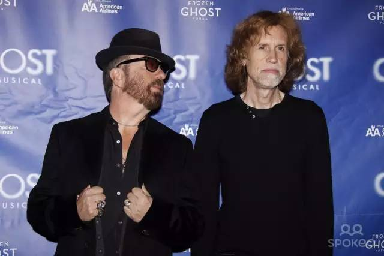戴夫发挥出“他将情感渲染于音乐、将音乐融入整个空间”的独特手法，让人不知不觉融入整首歌的意境中，随着剧中人物的悲喜命运而感叹。“我们希望观众们不仅仅是被剧中的剧情所吸引，还有音乐。”很显然，戴夫叔认为能打动人心的才是真正的好音乐。而这样的好音乐，也离不开整个团队的运作。当导演、编剧等为戴夫描述剧情时，浪漫的爱情故事加之动人的旋律，便在他脑中成形。有时候，两位天才大叔只用了2分钟就创作出了一首曲子。用1分钟的灵感星火，点燃一片美妙音乐的草原，是经典原版音乐剧《Ghost人鬼情未了》编曲团队的制胜法宝。
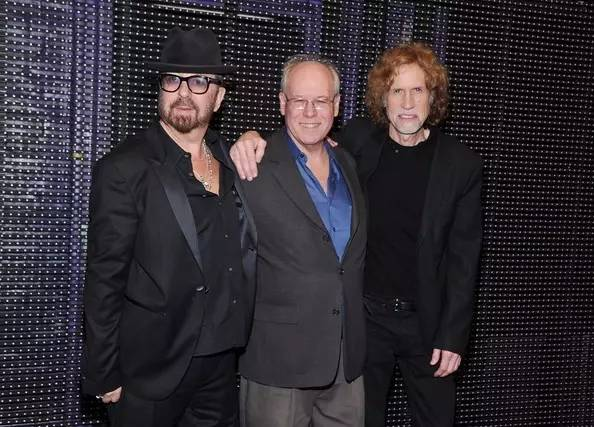-- 魔幻特效师
该音乐剧的特效设计也令人叫绝，特别是男主角山姆化为灵魂后进入莫莉家中的情节，运用了魔术特技达到逼真的效果。而山姆在地铁里飞翔的情景，更让现场观众吃惊，这些都归功于特效设计师保罗·基弗。
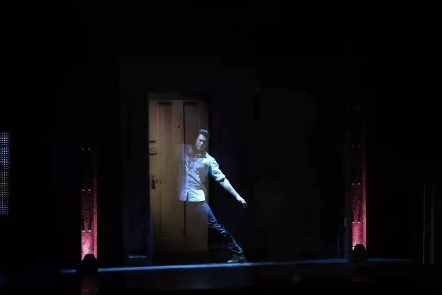保罗·基弗说："对于我来说，将电影中的那些著名的片段搬上舞台无疑是一个挑战。我认为最大的挑战之一，是山姆的手可以穿过实体，他的身体也可以穿透墙壁和门。为了设计这个幻觉场景，我们花费了大量的时间和经费。对我来说，是经历了很多个不眠之夜的冥思苦想，才成功的把这一幕搬上舞台。而这只是在剧中很多特技场景中的一个代表。当特效发生时，观众会很激动，因为这会推动剧情。比如演出最后，坏人被看不见的鬼所击败，观众是看不见那个鬼的，但会在一旁期盼着鬼的复仇。再比如，莫莉手中的物体平白无故的移动了，最终证明山姆的存在。观众看了这个景象，就会体验到魔术的魅力。"但问到他怎样让剧中的山姆自由出入莫莉的家时，他却不想把技术细节告诉别人："因为总的来说特效幻觉设计是非常技术的事。这中间需要很多重新规划、重新考虑。至于具体是怎么实现的，我是不会透露的。"
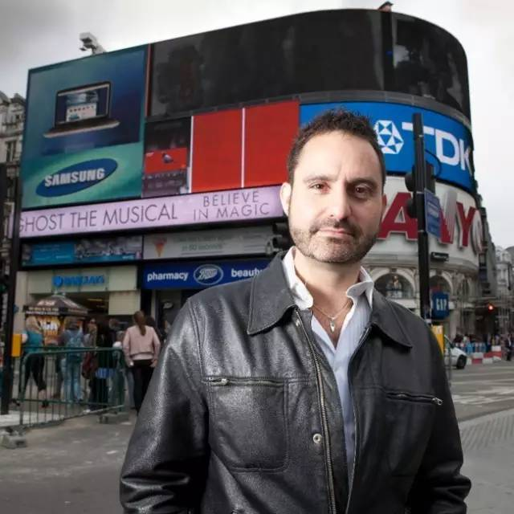-- “大制作”导演
导演也是经典原版音乐剧《Ghost人鬼情未了》的主要把握者，托尼奖获得者马修·华修斯导演作品超过75部，作品包括话剧、音乐剧、歌剧和电影。百老汇的作品有：《Boeing Boeing波音波音》、《Ghost人鬼情未了》、《The Norman Conquests诺曼征服》、《God of Carnege杀戮之神》等。
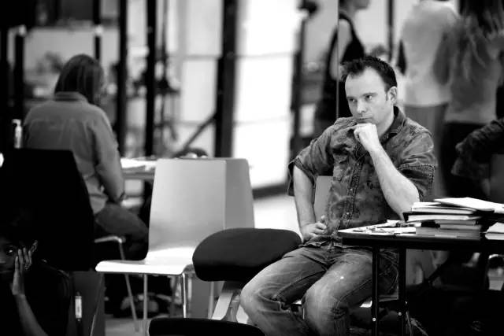正是这些重量级人物为这部音乐剧带来的高水准制作，让该剧刚登上舞台就吸引了观众。